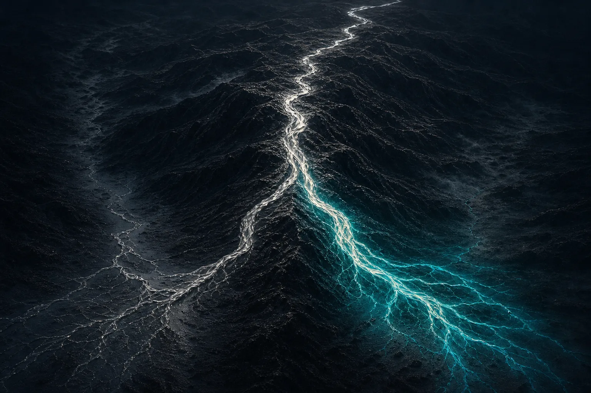
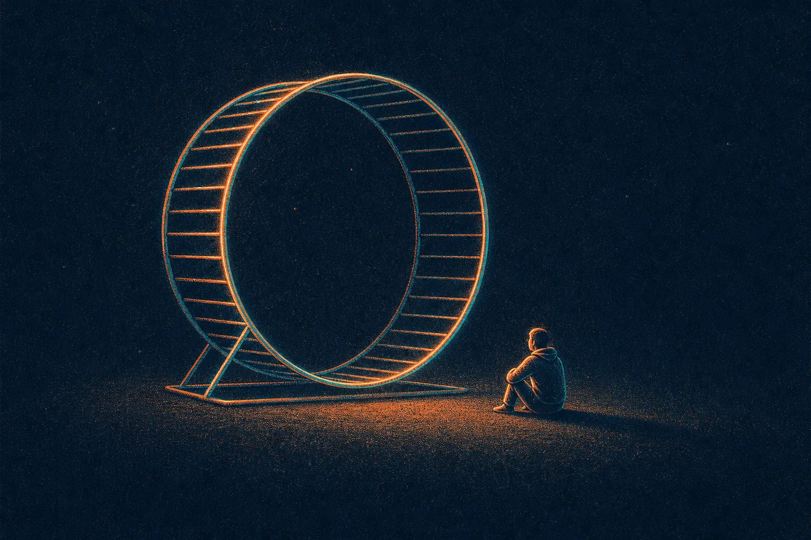

A personal note before any of this Kaspa stuff, because it is the actual point I wish to convey.
We all get stuck in the future. Planning moves. Stuck spinning. We are often one upgrade ahead, one milestone ahead, looking for the next green candle. Crypto cranks this mentality up to 11. It is a human thing and I do it constantly. Wen vProgs. Wen DAGKnight. Wen 100 BPS. Wen number go up. On and on.
This is us practicing the opposite, out loud, just for one moment. Sitting in something that is already here, or very close, instead of the thing that is coming. No price, no roadmap, all present. Most of us need this with Kaspa and in life. Anyways; from one very short monologue to a longer one.
Toccata is a watershed moment for Kaspa, and I do not say that lightly.
Everyone is looking forward to the big unreleased stuff, and so am I. But after talking to Michael Sutton I wanted to stop and bask in what Toccata actually is. I am not going to reach for the phrase most people reach for: smart contracts. Nobody agrees what it means, it makes you picture Ethereum, and it points your head in the wrong direction. Toccata is better understood as an inflection point: the moment Kaspa stops being only money and starts being able to express, without throwing away the things that made it Kaspa.
Here is my bias, stated plainly: I think cryptocurrency done right could end up as one of humanity's greatest inventions of the 21st century, and I think Kaspa is one of the more serious attempts at doing it right. I know how this reads: peak crypto cringe. I believe it anyway. The whole point of crypto was sovereignty. Be your own bank. Run your own node. Verify the rules yourself instead of trusting a company, a foundation, a sequencer, a validator cartel, or whatever privileged middleman wants to sit between you and your money. Kaspa keeps optimizing for that, and Toccata is the part where Kaspa gets to keep its sovereignty and pick up expressiveness at the same time. The combination is the hard part.

